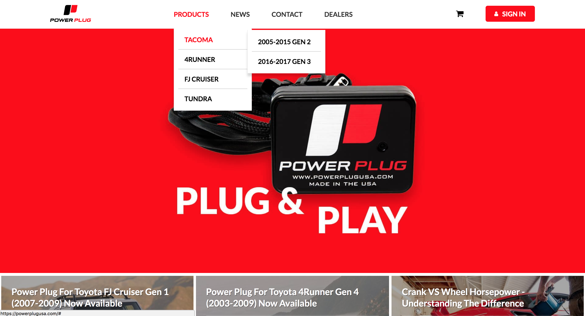
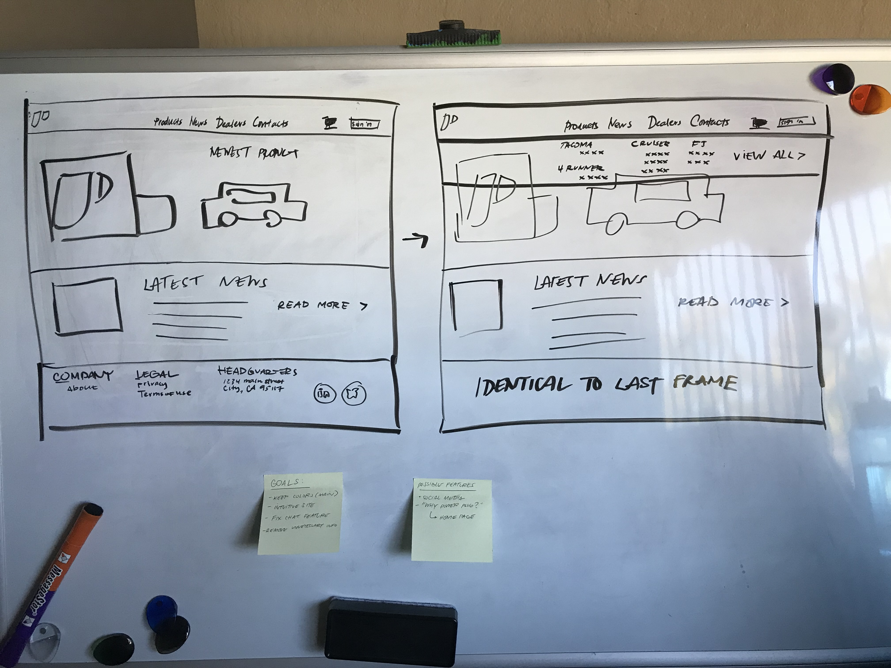
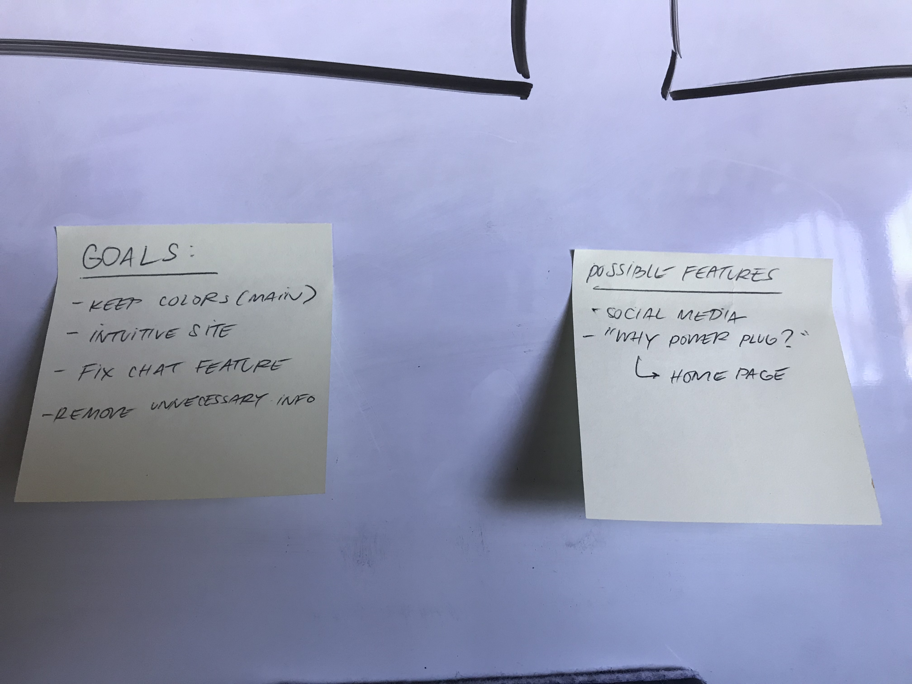
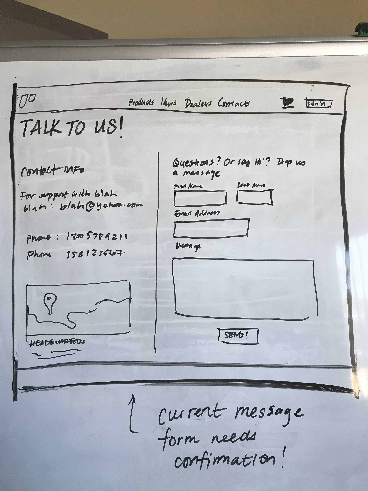
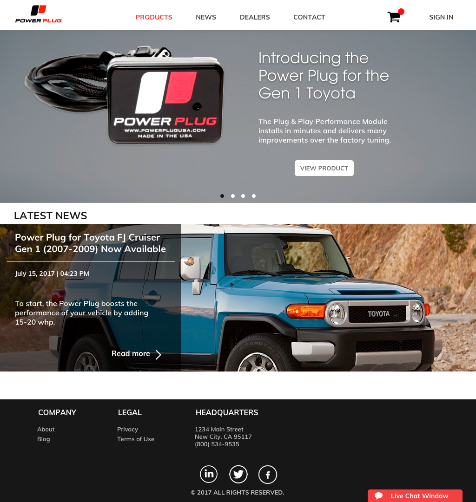
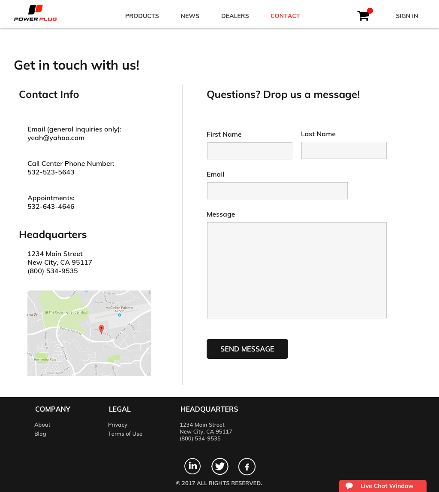

PowerPlug Website
POSITION
WEB DESIGNER
TOOLS & SKILLS USED
SKETCH - INVISION
PROJECT OVERVIEW
One of my freelance projects included re-designing a desktop website for PowerPlug USA. The client wanted to retain the color schematics, but wanted to update their overall design. This assignment differed greatly from my previous projects where I was focused on designing product UI.

CHALLENGES
I felt that the old interface didn't make good use out of their selected colors. My first impression of the red: it was bright, repulsive, and was taking up 600 pixels in height. There were a few other things that I felt could use some improvements including the global navigation, contact page, and live chat functionality. Below are some screenshots of the website pre-makeover.



APPROACH
After outlining the aspects that needed to be fixed, I began brainstorming some solutions. I focused mainly on the layout and architecture of information before focusing on the style. I drew out a few whiteboard flows of my concept website.



The next step in the process involved coming up with the usage of colors. I kept the colors as the client wanted, but I rearranged where they would appear on the website. The use of red is often associated with cancellation or deletion, so I changed the red buttons to a different color.
DESIGNING FOR THE BRAND
This opportunity allowed me to create something in the marketing sphere instead of my usual product UI design. I learned that focusing on brand design is just as important as the product, as it is the initial liaison between users and products.


